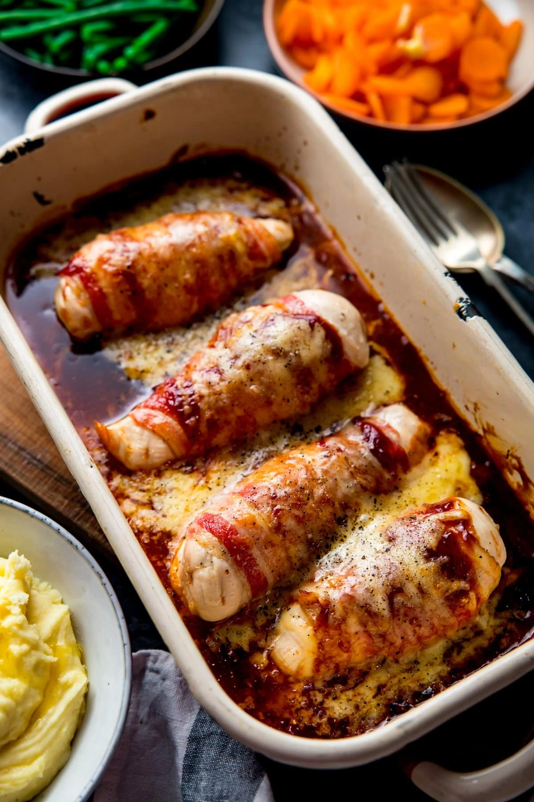

Description
It doesn't get much simpler than this chicken recipe! Bacon wrapped chicken, melted cheese and BBQ sauce, the ultimate treat for you and your family. Serve with mashed potatoes or homemade chips and veg.
We have plenty of brilliant chicken breast recipes if you are looking for more cooking inspiration. And if you want to make sure you avoid over-cooking chicken breasts, until they are dry and tasteless, follow our expert advice on how to cook chicken breast properly.
Ingredients
- 8 rashers smoked back bacon
- 4 skinless chicken breasts
- 25 g firm mozzarella, grated
- 25 g extra mature Cheddar cheese, grated
- 2 tbsp. barbecue sauce, we used Heinz
Steps
- Preheat oven to 200°C (180°C fan) mark 6 and line a baking tray with foil. Wrap 2 bacon rashers around each chicken breast, overlapping them slightly. Put the wrapped chicken breasts on the prepared baking tray and cook in the oven for 25-30min, until chicken is cooked through.
- Meanwhile, mix both cheeses together in a small bowl, set aside.
- Remove chicken from oven. Spread 1/2tbsp barbecue sauce on each chicken breast and sprinkle over the cheese. Return to the oven for 5min, until the cheese has melted. Serve with mashed potato and steamed vegetables, if you like.